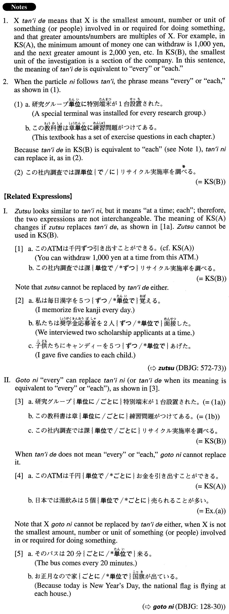

単位で (A. 582)
- (ksa).
- このATMは千円単位でお金を引き出すことができる。
- You can withdraw money from this ATM in multiples of 1,000 yen.
- (ksb).
- この社内調査では課単位でリサイクル実施率を調べる。
- This in-house investigation will examine the recycling rate for each section.
- (ksc).
- 日本では湯飲みは5個単位で売られることが多い。
- In Japan, tea cups are often sold in sets of five.
- (a).
- 我が社は今回のアジアからの労働者派遣が成功した場合には、次回から規模を大幅に拡大し、千人単位で派遣する予定だ。
- If our company's plan to send labourers from Asia is successful this time, next time we will greatly expand the scale and send labourers in groups of 1,000.
- (b).
- B社の新しいデータ通信サービスは、最低契約量である１５０時間分のデータ通信を１分単位で利用できる。
- B Company's new data communication service allows the user to transmit and receive data in one-minute units for a minimum contract amount of 150 hours.
- (c).
- オンライン書店のZ社は、本をページまたは章単位で販売するそうだ。
- They say the online bookstore Z is going to sell books by the page or the chapter.
- (d).
- このプロジェクト管理ソフトの新バージョンでは、これまで日単位で行われていた計画と管理を時間・分単位で行えるようになった。
- This new version of the project management software application allows us to plan and manage (our operations) by the hour and minute, instead of the day.
